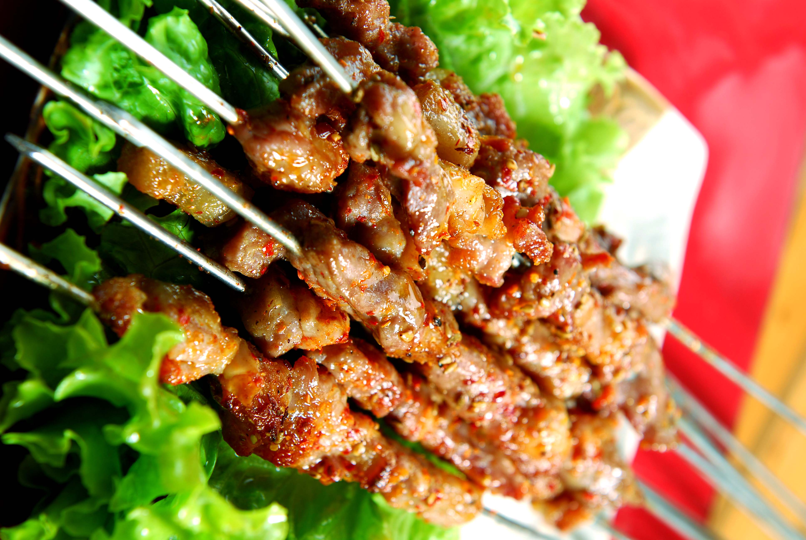

-

Phở Hà Nội và Top 7 quán phở ngon nhất Hà Nội
Phở được coi là tinh hoa ẩm thực của Hà Nội và người ta vẫn có câu cửa miệng rằng nếu bạn đến Hà Nội mà chưa ăn phở thì có nghĩa bạn chưa đến Hà Nội. -

Bún chả Hà Nội
Bún chả là món ăn được ưa thích ở Hà Nội và được bày bán từ vỉa hè bình dân cho đến hàng quán sang trọng ngon hay không phụ thuộc vào cách tẩm ướp thịt, độ chín và mềm của miếng thịt nướng. -

Gà luộc làm theo kiểu này thịt ngọt ngon đến không ngờ
Gà luộc là món ăn được nhiều người yêu thích. Tuy nhiên, cách luộc gà thơm ngon, không bị nứt da thì không phải ai cũng biết. Dưới đây là hướng dẫn chi tiết...
-

Bữa tối mà có sườn rim thì đảm bảo cơm hết sạch trong nháy mắt
Chan chút nước sốt sệt sệt lên bát cơm nóng , trộn đều rồi ăn cùng sườn rim mắm mềm ngọt thì sẽ hao cơm cực kì đó!Cùng khám phá cách chế biến món sườn rim mặn ngọt thơm ngon nào! -

Làm bánh gối tại nhà ngon như ngoài hàng
Bánh gối là một món ăn quen thuộc của Hà Nội. Đảm bảo gia đình bạn sẽ phải trầm trồ, thán phục độ khéo tay của bạn cho mà xem! Cùng học cách làm bánh gối ngay thôi nào! -

Thịt xiên làm theo cách vừa đơn giản mà lại vừa ngon
Từng xiên thịt nướng nóng hổi thơm nức mũi sẽ khiến bất cứ ai thèm chảy nước miếng khi đến Hà Nội. Vào bếp làm thịt xiên nướng ngon y như ngoài hàng với chúng tôi nhé!